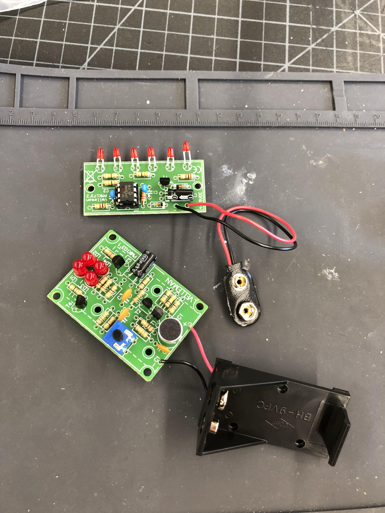
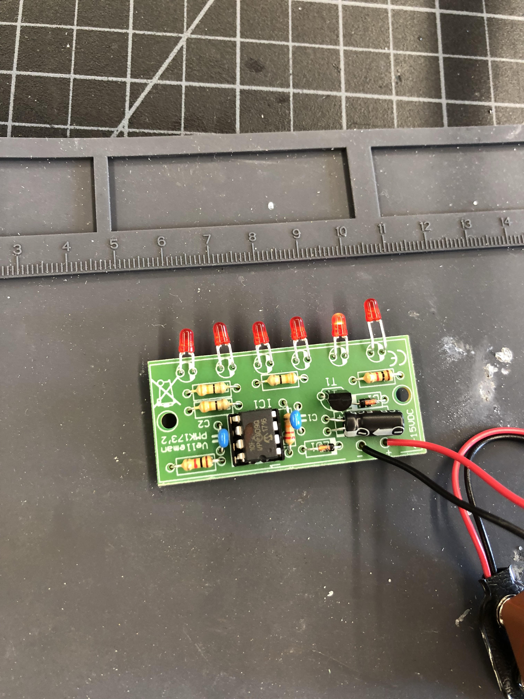
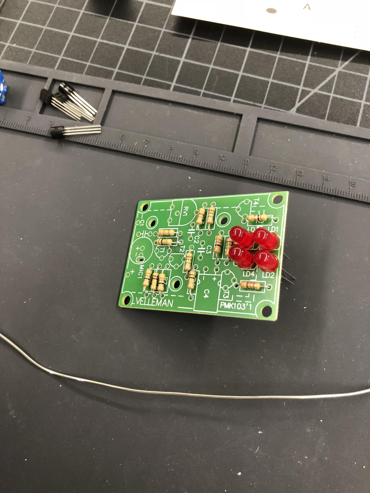

Index
Rotation 8: Soldering and Electronics
Project Description:
Soldering is a process in which two or more items are joined together by melting and putting a filler metal having a lower melting point than the adjoining metal. I decided to do the sound a light and the chasers for the soldering project. The overall process was relatively easy because I already knew how to solder in the first place and find it quite relaxing even! However, the sound a light project turned out not working at all even though I followed the directions very carefully. The chasers, however, worked out perfectly and I was happy to see the lights turning on. I learned that soldering, when heated to 750 degrees can be used for electrical connections and powering the overall circuit board. In the end, I'm happy with what turned out with the exception of the sound a light not working.


